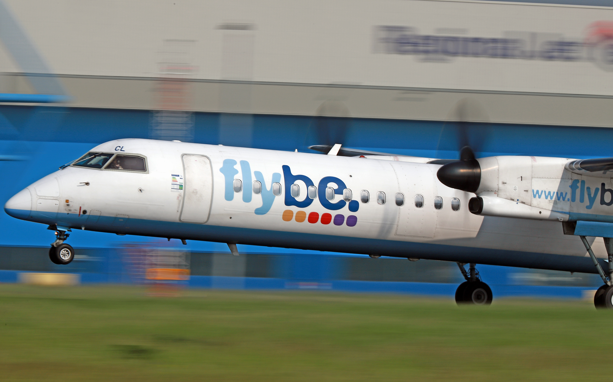

Flybe's unfortunate failure
Commercial
4 April 2021
Flybe was one of the most important airlines in the United Kingdom. Started in 1979, the airline operated short domestic flights around the UK, as well as international flights throughout Europe. Their routes included many in Scotland, and others that did not go through London. In a sense, they were a point-to-point regional airline, which made them essential for many underserved communities that greatly benefited from flights to their airports. Economically, many of the small communities Flybe served would have suffered if not for the business as well as leisure travelers that came as a result of Flybe's service.
Flybe had a successful IPO in 2010, but things deteriorated for them after that, with their stock prices continually falling until their collapse. Factors like an unwise Embraer order, Brexit, and currency values made things difficult for Flybe, to say the least. To make things worse, other low-cost carriers like EasyJet easily out-competed Flybe on some of their routes, while Flybe also had to compete with domestic rail and bus service.
A Flybe De Havilland Canada Dash 8 Q400 at Amsterdam Schipol Airport. Photo by Victor (vic_206) on Flickr under CC BY-NC-ND 2.0.
Flybe continued to struggle, even through 2019 when it was bought by a large airline consortium affiliated with Virgin, in hopes of rebranding the airline as Virgin Connect. However, it didn't happen because Flybe was in a worse financial state than originally thought. By 2020, the COVID-19 pandemic was the final nail in the coffin for Flybe, and they ceased operations on March 5, 2020.
Unlike the failure of Thomas Cook Airlines in 2019, Flybe's route network was structured differently, so there were no government charter flights to repatriate passengers, and most stranded Flybe customers were still in the UK. They were forced to find other options to reach their destinations. However, things might be looking up for Flybe, as the company behind the rebranding as Virgin Connect is looking to relaunch the airline in 2021. While the process is ongoing and requires much regulatory approval, Flybe might just make a comeback.
References
- Buckly, Julia. "Airline that went bust due to Covid makes a comeback". CNN Travel, 2020. https://www.cnn.com/travel/article/flybe-relaunch-pandemic/index.html.
- Calder, Simon. "Flybe Collapse: What Does it Mean for Passengers?". The Independent, 2020. https://www.independent.co.uk/travel/news-and-advice/flybe-collapse-passenger-rights-flights-cancelled-money-back-compensation-a9376616.html.
- Calder, Simon. "Flybe Collapse: What Went Wrong and What Happens Next?". The Independent, 2020. https://www.independent.co.uk/travel/news-and-advice/flybe-collapse-flights-passengers-virgin-atlantic-grant-shapps-air-passenger-duty-a9376571.html.
- "Flybe Limited (in Administration) (‘the Company’ or ‘Flybe’)". Flybe, 2020. https://web.archive.org/web/20210403032018/https://www.flybe.com/.
- Toh, Michelle. "UK airline Flybe collapses as coronavirus crisis deals the final blow". CNN Business, 2020. https://www.cnn.com/2020/03/04/business/flybe-collapse-2020/index.html.
- Topham, Gwyn. "Flybe: airline collapses two months after government announces rescue". The Guardian, 2020. https://www.theguardian.com/business/2020/mar/05/flybe-collapses-two-months-after-government-announces-rescue.